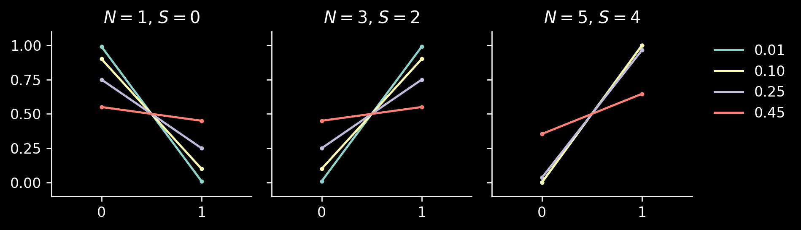
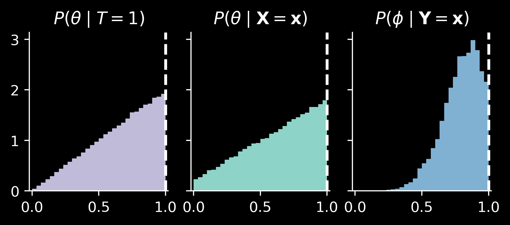

Bernoulli, binomial, beta-binomial… Why don’t we talk about the beta-Bernoulli distribution?
Author
Paweł Czyż
Published
February 19, 2024
I have already demonstrated that I don’t know how to properly toss a coin. Let’s do it again.
Famous Bernoulli and the company
Counting the distributions
Before we go any further: how many distributions can produce outcomes from the set \(\{0, 1\}\)?
In other words, we have a measurable space \(\{0, 1\}\) (where all four subsets are measurable) and we would like to know how many probability measures exist on this space. We have \(P(\varnothing) = 0\) and \(P(\{0, 1\}) = 1\) straight from the definition of a probability measure. As we need to have \(P(\{0\}) + P(\{1\}) = 1\) we see that there is a bijection between these probability measures and numbers from the set \([0, 1]\), given by \(P_b(\{1\}) = b\) for any bias\(b\in [0, 1]\). This distribution is called \(\mathrm{Bernoulli}(b)\) and it’s easy to prove that if \(X\sim \mathrm{Bernoulli}(b)\), then \[
\mathbb E[X] = P(X=1) = b.
\]
Hence, the first moment fully determines any distribution on \(\{0, 1\}\).
The derivation of variance is quite elegant, once one notices that if \(X\sim \mathrm{Bernoulli}(b)\), then also \(X^2\sim \mathrm{Bernoulli}(b)\), because it has to be some Bernoulli distribution and \(P(X^2=1) = P(X=1)\). Then, we have: \[
\mathbb V[X] = \mathbb E[X^2] - \mathbb E[X]^2 = b - b^2 = b(1-b).
\]
By considering both cases, we see that for every outcome \(x \in \{0, 1\}\), the likelihood is given by \[
\mathrm{Bernoulli}(x\mid b) = b^x(1-b)^{1-x}.
\]
A few coins
This characterization of distributions over \(\{0, 1\}\) is very powerful.
Consider the following problem: we have \(K\) coins with biases \(b_1, \dotsc, b_K\) and we throw a loaded die which can give \(K\) different outcomes, each with probability \(d_1, \dotsc, d_K\) (which, of course, sum up to \(1\)) to decide which coin we will toss. What is the outcome of this distribution? It is, of course, a coin toss outcome, which is a number from the set \(\{0, 1\}\). Hence, this has to be some Bernoulli distribution. Which one? Bernoulli distributions are fully determined by their expectations, and the expectation in this case is given by a weighted average \(\bar b = b_1 d_1 + \cdots + b_K d_K\). In other words, we can replace a loaded die and \(K\) biased coins with just a single biased coin.
To have more equations, the first procedure corresponds to \[\begin{align*}
D &\sim \mathrm{Categorical}(d_1, \dotsc, d_K)\\
X \mid D &\sim \mathrm{Bernoulli}(b_D)
\end{align*}
\]
and the second one to \[
Y \sim \mathrm{Bernoulli}(\bar b),
\]
with \(\bar b = b_1d_1 + \cdots + b_Kd_K\).
Both of these distributions are the same, i.e., \(\mathrm{law}\, X = \mathrm{law}\, Y\).
In particular, the likelihood has to be the same, proving an equality \[
\sum_{k=1}^K d_k\, b_k^x(1-b_k)^{1-x} = \bar b^x(1-\bar b)^{1-x}
\]
for every \(x\in \{0, 1\}\).
Even more coins
Even more interesting, consider infinitely many coins with different biases, which are chosen according to a beta distribution. Once the coin is chosen, we toss it: \[\begin{align*}
B &\sim \mathrm{Beta}(\alpha, \beta)\\
X\mid B &\sim \mathrm{Bernoulli}(B)
\end{align*}
\]
This is a continuous mixture, which we might call \(\mathrm{BetaBernoulli}(\alpha, \beta)\)… if it weren’t just a plain Bernoulli distribution with bias \[
\mathbb E[X] = \mathbb E[\mathbb E[X\mid B]] = \mathbb E[B] = \frac{\alpha}{\alpha + \beta}.
\]
Noisy communication channel
Let’s consider an example involving plain Bernoulli distributions and a noisy communication channel.
Let \(X\sim \mathrm{Bernoulli}(b)\) be an input variable. The binary output, \(Y\), is a noisy version of \(X\), with \(\alpha\) controlling the false positive rate and \(\beta\) the false negative rate: \[
P(Y = 1 \mid X=1) = 1-\beta, \quad P(Y=1\mid X=0) = \alpha.
\]
We can write this model as: \[\begin{align*}
X &\sim \mathrm{Bernoulli}(b)\\
Y \mid X &\sim \mathrm{Bernoulli}( X(1-\beta) + (1-X) \alpha)
\end{align*}
\]
In fact, we have already seen this example: we can treat \(X\) as a special case of a loaded dice, indexing a finite mixture with just two components. Hence, the marginal distribution of \(Y\) is \[
Y \sim \mathrm{Bernoulli}(b(1-\beta) + (1-b) \alpha).
\]
Tossing multiple coins
We know that a single coin toss characterises all probability distributions on the set \(\{0, 1\}\). However, once we consider \(N\ge 2\) coin tosses, yielding outcomes in the set \(\{0, 1, 2, \dotsc, N\}\), many different distributions will appear.
We mentioned some of these distributions in this post, but just for completeness, at the end there is a list of standard distributions.
Similarly, if one is interested in modeling binary vectors, which are from the set \(\{0, 1\}\times \{0, 1\} \cdots \{0, 1\}\), many different distributions will appear. Let’s analyse an example below.
Two deceptively similar distributions
Denoising problem
We have a fixed bit \(T \in \{0, 1\}\) and we observe its noisy measurements, with false negative rate \(\beta\) and false positive rate \(\alpha\) (recall this section). We will write \(c_0 = \alpha\) and \(c_1 = 1-\beta\) and put some prior on \(T\): \[\begin{align*}
\theta &\sim \mathrm{Beta}(\alpha, \beta)\\
T\mid \theta &\sim \mathrm{Bernoulli}(\theta)\\
X_n\mid T &\sim \mathrm{Bernoulli}( c_0(1-T) + c_1T) \text{ for } n = 1, \cdots, N
\end{align*}
\]
Let’s use shorthand notation \(\mathbf{X} = (X_1, \dotsc, X_N)\) and note that the likelihood is: \[\begin{align*}
P(\mathbf{X} \mid T) &= \prod_{n=1}^N P(X_n \mid b(T) ) \\
&= \prod_{n=1}^N b(T) ^{X_n} \left(1-b(T)\right)^{1-X_n} \\
&= b(T)^S \left(1-b(T)\right)^{N-S}
\end{align*}
\]
where \(b(T) = c_0(1-T) + c_1T\) and \(S = X_1 + \cdots + X_N\).
After reading the discussion above, there is a natural question: why is \(\theta\) introduced at all? For a simple denoising question, i.e., finding \(P(T\mid \mathbf{X}) \propto P(\mathbf{X} \mid T) P(T)\), this parameter is not needed at all: \(P(T)\) is just a Bernoulli variable, with bias parameter \(\bar \theta = \alpha/(\alpha + \beta)\). Then, \[
P(T=1\mid \mathbf{X}) = \frac{ c_1^S (1-c_1)^{N-S} \cdot \bar \theta }{ c_1^S(1-c_1)^{N-S} \cdot \bar \theta + c_0^S(1-c_0)^{N-S}\cdot (1-\bar \theta) }.
\]
Let’s quickly implement this formula and see how the posterior looks if we start with an unbiased coin (i.e., \(\bar \theta=0.5\)), observe \(S = N - 1\) successes, and we vary the noise level \(\alpha = \beta = c_0 = 1 - c_1\):
Code
from typing import Callable, NamedTupleimport jaximport jax.numpy as jnpimport numpyroimport numpyro.distributions as distimport matplotlib.pyplot as pltplt.style.use("dark_background")def _binomial_loglikelihood(n: int, s: int, bias: float) ->float:return s * jnp.log(bias) + (n - s) * jnp.log1p(-bias)class LikelihoodArgs(NamedTuple): n: int# Number of throws s: int# Number of successes, 0 <= s <= n c0: float# Probability of observing success if T = 0 (false positive rate) c1: float# Probability of observing success if T = 1 (true positive rate)class BetaPriorArgs(NamedTuple): alpha: float beta: float@propertydef mean(self) ->float:returnself.alpha / (self.alpha +self.beta)def posterior_t( bias: float, like: LikelihoodArgs,) ->float:"""Calculates P(T | data), where the prior is given by T ~ Bernoulli(bias).""" n, s, c0, c1 = like.n, like.s, like.c0, like.c1 log_0 = _binomial_loglikelihood(n=n, s=s, bias=c0) + jnp.log1p(-bias) log_1 = _binomial_loglikelihood(n=n, s=s, bias=c1) + jnp.log(bias)return jax.nn.softmax(jnp.array([log_0, log_1]))fig, axs = plt.subplots(1, 3, dpi=120, figsize=(8, 2.4), sharex=True, sharey=True,)for ax in axs: ax.spines[['top', 'right']].set_visible(False) ax.set_xticks([0, 1]) ax.set_xlim([-0.5, 1.5]) ax.set_ylim([-0.1, 1.1]) ax.set_yticks([0, 0.25, 0.5, 0.75, 1])for ax, n inzip(axs, [1, 3, 5]): ax.set_title(f"$N = {n}$, $S = {n-1}$")for i, noise inenumerate([0.01, 0.1, 0.25, 0.45]): like = LikelihoodArgs( n=n, s=n -1, c0=noise, c1=1-noise, ) posterior = posterior_t(bias=0.5, like=like) ax.plot([0, 1], posterior, label=f"{noise:.2f}", c=f"C{i}") ax.scatter([0, 1], posterior, c=f"C{i}", s=4)ax = axs[-1]ax.legend(frameon=False, bbox_to_anchor=(1.05, 1))fig.tight_layout()
/home/pawel/micromamba/envs/data-science/lib/python3.10/site-packages/tqdm/auto.py:21: TqdmWarning: IProgress not found. Please update jupyter and ipywidgets. See https://ipywidgets.readthedocs.io/en/stable/user_install.html
from .autonotebook import tqdm as notebook_tqdm
An NVIDIA GPU may be present on this machine, but a CUDA-enabled jaxlib is not installed. Falling back to cpu.

This formula is elegant: we can use it to solve the denoising problem, i.e., to infer the value of the \(T\) variable. Why did we introduce the \(\theta\) variable with its own prior? We may be interested not only in inferring a missing coin toss, but also in learning about the unknown bias \(\theta\) of the coin from this experiment.
For example, if \(T\) were directly observed, we would have \(P(\theta \mid T) = \mathrm{Beta}(\theta \mid \alpha + T, \beta + (1-T) )\):
Importantly, we see that the posterior on \(\theta\) will not shrink even for large \(N\): increasing \(N\) affects how well we can determine the outcome of the toss \(T\). But even if we observe \(T\) perfectly, it’s only one toss, so it does not give too much information on the bias \(\theta\).
Let’s now look at this problem also from a bit different perspective. If we want to update \(\theta\) directly from the observed data \(\mathbf{X}\), we can marginalise \(T\) out in the likelihood: \[\begin{align*}
P(\mathbf{X} \mid \theta ) &= \sum_{t} P(\mathbf{X} \mid T=t) P(T=t\mid \theta) \\
&= \theta P(\mathbf{X} \mid T=1) + (1-\theta) P( \mathbf{X}\mid T=0) \\
&= \theta c_1^{S}(1-c_1)^{N-S} + (1-\theta) c_0^S(1-c_0)^{N-S}.
\end{align*}
\]
We have now only one continuous variable and we could use Hamiltonian Monte Carlo to sample from the distribution \(P(\theta \mid \mathbf{X})\). We have already determined it analytically, as a mixture of beta distributions, but let’s quickly compare the results:
HMC agrees well with the mixture of beta distributions. We see that \(P(\theta \mid \mathbf{X})\) is slightly more diffuse compared with the case when \(T\) is directly observed.
A bit different model
In the model above, for any single observation \(X_n\) we had \[
P(X_n\mid \theta) = \theta c_1^{X_n}(1-c_1)^{1-X_n} + (1-\theta) c_0^{X_n}(1-c_0)^{1-X_n}.
\]
which is not the product of \(\prod_n P(X_n\mid \theta)\), because all the variables \(X_n\) were noisy observations of a single coin toss outcome \(T\).
Let’s now consider a deceptively similar model: \[\begin{align*}
\phi &\sim \mathrm{Beta}(\alpha, \beta)\\
U_n \mid \phi &\sim \mathrm{Bernoulli}(\phi) \\
Y_n \mid U_n &\sim \mathrm{Bernoulli}(c_0(1-U_n) + c_1U_n)
\end{align*}
\]
In this case, for each observation \(Y_n\), we have a new coin toss\(U_n\).
We have \(U_n\sim \mathrm{Bernoulli}(\alpha/(\alpha + \beta))\), so that \(\mathrm{law}\, U_n = \mathrm{law}\, T\). Similarly, \(P(Y_n \mid \phi)\) and \(P(X_n \mid \theta)\) will be very similar: \[\begin{align*}
P(Y_n \mid \phi) &= \sum_{u} P( Y_n \mid U_n=u ) P(U_n=u \mid \phi) \\
&= \phi c_1^{Y_n}(1-c_1)^{1-Y_n} + (1-\phi) c_0^{Y_n} (1-c_1)^{1-Y_n}.
\end{align*}
\]
We see that for \(X_n = Y_n\) and \(\theta = \phi\) the expressions are exactly the same.
For \(N=1\) there is no real difference between these two models. However, for \(N\ge 2\) a difference appears, because throws \(U_n\) are independent and we have \[
P(\mathbf{Y} \mid \phi) = \prod_{n} \left( \phi c_1^{Y_n}(1-c_1)^{1-Y_n} + (1-\phi) c_0^{Y_n} (1-c_1)^{1-Y_n} \right).
\]
This is substantially different from \(P(\mathbf{X}\mid \theta)\).
Perhaps the following perspective is useful: the new model, with variables \(U_n\) marginalised out, corresponds to the following:
Hence, although the likelihood functions agree for any single observation, i.e., for every \(x\in \{0, 1\}\), the likelihood functions \(P(X_n=x\mid \theta)\) and \(P(Y_n=x\mid \phi)\) are the same, the likelihood functions constructed using all observed variables, \(P(\mathbf{X}\mid \theta)\) and \(P(\mathbf{Y}\mid \phi)\), are usually different.
Also, the posteriors \(P(\theta \mid \mathbf{X})\) and \(P(\phi \mid \mathbf{Y})\) do differ: \(\phi\) treats each outcome \(Y_n\) independently, so that the posterior can shrink quickly if \(N\) is large.
Compare this with the posterior on \(\theta\), which assumes that all \(X_n\) are noisy versions of a single throw \(T\), so it knows that there is little information about \(\theta\) even if \(N\) is large: the posterior will always be a mixture of \(\mathrm{Beta}(\alpha+1, \beta)\) and \(\mathrm{Beta}(\alpha, \beta+1)\). In particular, if \(\alpha = \beta = 1\), the posterior on \(\theta\) will still be very diffuse.
For example, consider \(T = 1\). We toss the coin \(N = 10\) times, but due to the noise \(c_0 = 1 - c_1 = 0.1\) we observed \(S=8\). We have the following \(P(T=1\mid \mathbf{X})\):
/tmp/ipykernel_11590/3633385242.py:36: UserWarning: There are not enough devices to run parallel chains: expected 2 but got 1. Chains will be drawn sequentially. If you are running MCMC in CPU, consider using `numpyro.set_host_device_count(2)` at the beginning of your program. You can double-check how many devices are available in your system using `jax.local_device_count()`.
mcmc = MCMC(nuts_kernel, num_warmup=1000, num_samples=5_000, num_chains=2)
0%| | 0/6000 [00:00<?, ?it/s]warmup: 0%| | 1/6000 [00:00<1:28:40, 1.13it/s, 3 steps of size 8.10e+00. acc. prob=0.68]warmup: 11%|█ | 655/6000 [00:00<00:05, 908.21it/s, 3 steps of size 1.76e+00. acc. prob=0.79]sample: 22%|██▏ | 1312/6000 [00:01<00:02, 1844.48it/s, 7 steps of size 7.26e-01. acc. prob=0.93]sample: 33%|███▎ | 1972/6000 [00:01<00:01, 2753.18it/s, 3 steps of size 7.26e-01. acc. prob=0.92]sample: 44%|████▍ | 2632/6000 [00:01<00:00, 3577.19it/s, 3 steps of size 7.26e-01. acc. prob=0.92]sample: 55%|█████▍ | 3290/6000 [00:01<00:00, 4280.01it/s, 3 steps of size 7.26e-01. acc. prob=0.92]sample: 66%|██████▌ | 3951/6000 [00:01<00:00, 4863.02it/s, 3 steps of size 7.26e-01. acc. prob=0.92]sample: 77%|███████▋ | 4603/6000 [00:01<00:00, 5298.99it/s, 3 steps of size 7.26e-01. acc. prob=0.92]sample: 88%|████████▊ | 5264/6000 [00:01<00:00, 5655.87it/s, 3 steps of size 7.26e-01. acc. prob=0.92]sample: 99%|█████████▉| 5930/6000 [00:01<00:00, 5936.81it/s, 3 steps of size 7.26e-01. acc. prob=0.92]sample: 100%|██████████| 6000/6000 [00:01<00:00, 3335.62it/s, 3 steps of size 7.26e-01. acc. prob=0.92]
0%| | 0/6000 [00:00<?, ?it/s]warmup: 11%|█▏ | 677/6000 [00:00<00:00, 6768.72it/s, 1 steps of size 5.60e-01. acc. prob=0.79]sample: 23%|██▎ | 1354/6000 [00:00<00:00, 6768.16it/s, 3 steps of size 7.83e-01. acc. prob=0.92]sample: 34%|███▍ | 2034/6000 [00:00<00:00, 6781.42it/s, 1 steps of size 7.83e-01. acc. prob=0.92]sample: 45%|████▌ | 2714/6000 [00:00<00:00, 6787.05it/s, 7 steps of size 7.83e-01. acc. prob=0.92]sample: 57%|█████▋ | 3393/6000 [00:00<00:00, 6778.94it/s, 3 steps of size 7.83e-01. acc. prob=0.92]sample: 68%|██████▊ | 4072/6000 [00:00<00:00, 6782.54it/s, 3 steps of size 7.83e-01. acc. prob=0.92]sample: 79%|███████▉ | 4752/6000 [00:00<00:00, 6786.99it/s, 7 steps of size 7.83e-01. acc. prob=0.92]sample: 91%|█████████ | 5431/6000 [00:00<00:00, 6787.16it/s, 1 steps of size 7.83e-01. acc. prob=0.92]sample: 100%|██████████| 6000/6000 [00:00<00:00, 6781.78it/s, 1 steps of size 7.83e-01. acc. prob=0.92]

As we expected, the posterior on \(\phi\) is much more precise than posterior on \(\theta\). It also is shifted towards the value \(T=1\), so (in this case) it behaves as sort of an approximation to \(T\).
Which model is better for denoising?
Both models actually answer different questions: the first model tries to estimate \(T\), a single coin toss, and slightly updates the information about this coin bias, \(\theta\).
The second model assumes independent coin tosses, where the bias is controlled by \(\phi\). As such, it can quickly shrink the posterior on \(\phi\). Moreover, it can be used to answer the question to impute individual coin tosses, \(P(\mathbf{U} \mid \mathbf{Y})\).
Let’s think what could happen if we fitted each model to the data generated from the other one: this is working with misspecified models (in the \(\mathcal M\)-complete setting).
Consider a setting where we have a lot of data, \(N\gg 1\) and the false positive and false negative rates are small, with \(c_0 \ll c_1\). If the data come from the second model, with individual variables \(U_n\sim \mathrm{Bernoulli}(\phi)\), and we have \(Y_n\approx U_n\), then the posterior on \(T\) will have most mass on the maximum likelihood solution: either \(0\) (which should happen for \(\phi \ll 0.5\)) or \(1\) (for \(\phi \gg 0.5\)). This model will be underfitting and the predictive distribution from this model will be quite bad: new \(Y_{N+1}\) would again be an approximation to \(U_{N+1}\), which is sampled from \(\mathrm{Bernoulli}(\phi)\), but the model would just return a noisy version of the inferred \(T\).
On the other hand, if we have a lot of data from the first model (with a single \(T\) variable) and we fit the second model, the posterior on \(\phi\) may have most of the mass near \(0\) or \(1\), depending on the true value of \(T\). Hence, although \(U_n\sim \mathrm{Bernoulli}(\phi)\) are sampled independently, once \(\phi\) is near the true value of \(T\) (\(0\) or \(1\)), they can all be approximately equal to \(T\).
So, when there is a lot of data, noting where most of the mass of \(\phi\) lies can be a good approximation to the maximum likelihood of \(T\).
Of course, these \(N\gg 1\) settings only tell what happens when we have a lot of data and we didn’t discuss the uncertainty: can we use \(\phi\) to get well-calibrated uncertainty on \(T\)?
I generally expect that the \(\phi\) model can be a bit better in terms of handling slight misspecification, but doing inference directly on \(T\) will provide better results in terms of uncertainty quantification for small \(N\). But this is just a hypothesis: extensive simulations are not for today.
Appendix
List of distributions
Binomial distribution
The simplest choice: we have a coin with bias \(b\) and we toss it \(N\) times: \[\begin{align*}
X_n &\sim \mathrm{Bernoulli}(b) \text{ for } n = 1, \dotsc, N\\
S &= X_1 + \cdots + X_N
\end{align*}
\]
Then, we have \(S \sim \mathrm{Binomial}(N, b)\). As the individual throws are independent, it’s easy to prove that \[
\mathbb E[S] = Nb, \quad \mathbb V[S] = Nb(1-b).
\]
Finite mixture of binomial distributions
As above, consider \(K\) coins with biases \(b_1, \dotsc, b_K\) and a dice used to choose the coin which will be tossed. This is a finite mixture of binomial distributions: \[\begin{align*}
D &\sim \mathrm{Categorical}(d_1, \dotsc, d_K)\\
S \mid D &\sim \mathrm{Binomial}(N, b_D)
\end{align*}
\]
In this case the expectation is exactly what one can expect: \[
\mathbb E[S] = \sum_{k=1}^K d_k \cdot Nb_k = N\bar b,
\] where \(\bar b = d_1b_1 + \cdots + d_Kb_K\).
Similarly as here, we can consider an infinite collection of coins, chosen from the beta distribution. Once we pick a coin, we toss it \(N\) times:
\[\begin{align*}
B &\sim \mathrm{Beta}(\alpha, \beta)\\
S \mid B &\sim \mathrm{Binomial}(N, B)
\end{align*}
\]
The marginal distribution is called the beta-binomial distribution: \[
S \sim \mathrm{BetaBinomial}(N, \alpha, \beta).
\]
It’s easy to prove that \[
\mathbb E[S] = N \frac{\alpha}{\alpha + \beta},
\] but I don’t know an easy derivation of the formula for the variance: \[
\mathbb V[S] = Nb(1-b)\cdot (1 + (N-1)\rho),
\] where \(b=\alpha/(\alpha + \beta)\) and \(\rho=1/(1 + \alpha + \beta)\).
Hence, choosing the coin first incurs additional variance (compared to the binomial distribution).
In this case one has \(N\) coins with biases \(b_1, \dotsc, b_N\) and tosses each of them exactly once: \[\begin{align*}
X_n &\sim \mathrm{Bernoulli}(b_n) \text{ for } n=1, \dotsc, N\\
S &= X_1 + \cdots + X_N.
\end{align*}
\]
We see that if all biases are equal, this reduces to the binomial distribution. However, this one is more flexible, as the expectation and variance are given now by \[
\mathbb E[S] = \sum_{n=1}^N b_n, \quad \mathbb V[S] = \sum_{n=1}^N b_n(1-b_n).
\]
Beta-Bernoulli sparsity magic
Consider the following prior on coefficients in a linear model: \[\begin{align*}
\gamma &\sim \mathrm{Beta}(\alpha, \beta)\\
\theta_k \mid \gamma &\sim \gamma\, Q_0 + (1-\gamma)\, Q_1 \text{ for } k = 1, \dotsc, K
\end{align*}
\]
where \(Q_1\) is e.g., a \(\mathrm{Normal}(0, 10^2)\) distribution corresponding to “slab” component and \(Q_0\), e.g., \(\mathrm{Normal}\left(0, 0.01^2\right)\) is the “spike” component.
Intuitively, we expect that fraction \(\gamma\) of the parameters will be shrunk to \(0\) by the spike component \(Q_0\) and the rest (the \(1-\gamma\) fraction) of the parameters will actually be used to predict values.
Michael Betancourt wrote an amazing tutorial in which he introduces local latent variables, \(\lambda_k\), that control whether \(\theta_k\) should be shrunk or not:
\[\begin{align*}
\lambda_k &\sim \mathrm{Beta}(\alpha, \beta) \text{ for } k = 1, \dotsc, K\\
\theta_k \mid \lambda_k &\sim \lambda_k \, Q_0 + (1-\lambda_k)\, Q_1 \text{ for } k = 1, \dotsc, K.
\end{align*}
\]
Using small letters for PDFs, we can marginalize variables \(\lambda_k\) as follows: \[
p(\mathbf{\theta}) = \prod_{k=1}^K p(\theta_k) = \prod_{k=1}^K \left( \int p(\theta_k \mid \lambda_k) \, \mathrm{d}P(\lambda_k) \right)
\] and \[\begin{align*}
p(\theta_k) &= \int p(\theta_k \mid \lambda_k) \, \mathrm{d}P(\lambda_k) \\
&= q_0(\theta_k) \int \lambda_k\, \mathrm{Beta}(\lambda_k \mid \alpha, \beta) \, \mathrm{d}\lambda_k + q_1(\theta_k) \int (1-\lambda_k)\, \mathrm{Beta}(\lambda_k \mid \alpha, \beta)\, \mathrm{d} \lambda_k \\
&= q_0(\theta_k) \frac{\alpha}{\alpha + \beta} + q_1(\theta_k) \left( 1 - \frac{\alpha}{\alpha + \beta} \right),
\end{align*}
\] so that \[
\theta_k \sim \gamma\, Q_0 + (1-\gamma)\, Q_1,
\]
where \(\gamma = \alpha / (\alpha + \beta)\).
Beta-Bernoulli distribution offers the following perspective: draw latent indicator variables \(T_k \mid \lambda_k \sim \mathrm{Bernoulli}(\lambda_k)\), so that \(\theta_k \mid T_k \sim T_k\, Q_0 + (1-T_k) \, Q_1\).
We recognize that \(T_k \sim \mathrm{BetaBernoulli}(\alpha, \beta)\) which is just \(\mathrm{Bernoulli}(\gamma)\) for \(\gamma =\alpha/(\alpha+\beta)\). By integrating out \(T_k\) variables (which is just trivial summation!), we have \[
\theta_k \sim \gamma\, Q_0 + (1-\gamma)\, Q_1.
\]